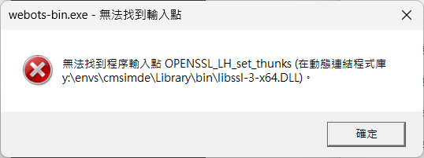
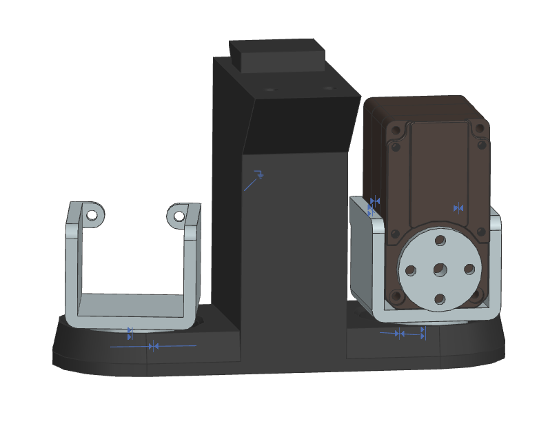

Plotter <<
Previous Next >> Network
Topics
https://www.engineering.com/what-is-siemens-designcenter/ (有關現階段各家 CAD 公司所提供的中階與高階電腦輔助機械設計套件，以及 Siemsns 就未來 CAD 發展方向的描述)
2b:
w1: 課程簡介、分組與每三週分組心得簡報規劃
2a:
w1:
5bar linkage Plotter 設計參考:
https://github.com/mdecycu/Pentagonal_plotting_robot_repo
https://github.com/mdecycu/five_bar_linkage
https://github.com/mdecycu/Robot-Sketcher-5-bar-parallel-manipulator-
https://github.com/mdecycu/Inverse-Kinematics-Five-Bar
5-Bar Linkage Kinematic Solver and Simulator.pdf
提筆設計:
整體機構以 Watts linkage 提升及下降
整體機構以凸輪機構提升，以彈簧拉回下降
筆座採電磁鐵上升，以彈簧拉回下降
繪圖機構總成固定，繪圖區域升降
採用其他設計，討論各種設計的優缺點
開啟 Webots 時出現以下錯誤:

Webots2023b 啟動時需要 openssl_lh_set_thunks 函式，因為這是特別的 OpenSSL 介接，其目的可能是透過此函式與 OpenSSL 整合記憶體分配、除錯、或 OpenSSL 引擎擴充。
目前已知 miniconda 中必須透過 conda install openssl=3.0.16 安裝舊版後的 openssl-3-x64.dll 中才會包含openssl_lh_set_thunks 函式。
因此在命令列執行: conda install openssl=3.0.16 就可以避開上列錯誤。
另外執行 plotter_project.7z 中 Python 控制程式需要 numpy 套件，可以透過 conda install -c conda-forge numpy 安裝。
w2:
除了使用 miniconda3 建立可攜 Python 環境外，也可以使用 Py310_cmsimde_numpy.7z。
登入 Onshape 後，連線至 OpenDuck mini v2 官方 Onshape 後，以滑鼠左鍵點選畫面左上方的功能表，點選 Copy workspace 後，選擇 Document name，滑鼠點選 Copy document to 中的 Owned by me，再點選下方的 Open 後，就可以取得 OpenDuck workspace 的副本。
CAD 參考資料:
Onshape 入門指南
https://github.com/andyeske/How-to-CAD-Onshape
How to CAD almost anything
CAD_for_college.pdf
Onshape learning projects
相同方式取得 Plotter 馬達與固定盒副本，了解如何使用 Onshape 設計變數(Variable)，如何在 Part Studio 建立 Parts 備用，以及如何從 Part Studio 導入零件進行組立。
各組組員請分別練習在 Solvespace、NX2312 與 Openshape 上進行零件繪圖與組立，其中將牽涉使用各不同套件的繪圖與組立指令，並且必須了解如何透過不同零組件檔案格式(STEP424、Parasolid、STL 等)進行轉檔。

Openduck mini v2 的 trunk_bottom (下軀幹) 組立，其中包括 roll_motor_bottom x 2 以及 STS3250 次組立 x 2。cad2025_openduck_Mechanical_Parts_2.7z
接下來，請各組員設法將下軀幹兩側的 left_roll_to_pitch 以及 right_roll_to_pitch 零件組立後，分工進行 Webots Tutorial 後，設法將組立件轉進 Webots，並利用 Python 控制程式讓兩側的 roll_to_pitch 可以由 STS3250 進行驅動。
另外，除了使用 miniconda3 建立 Python env 外，也可以使用 gen_portable_python.py 建立可攜 Python 環境。
NXOpen Python 範例:
cd2024_2b_g6_steel_ball_platform_nxopen.7z
cd2024_platform_nxopen_assembly_ex.7z
nxopen_create_a_new_part.py
nxopen_new_part_line_by_line_comment.py
w3: 各組員分別用甚麼套件進行零組件繪圖? 如何分工協同? 設計流程進行得如何? 設計尺寸該如何訂定?
A_Method_for_Optimal_Kinematic_Design_of_Five-bar_Planar_Parallel_Manipulators.pdf
optimal_synthesis_of_five-bar_linkage_based_on_singularity-free_workspaces_with_predefined_shapes.pdf
prompt_and_result1.py
prompt_and_result2_14x14.py
prompt_and_result2_20x20.py
電腦輔助設計室電腦硬體與網路使用介紹
C 槽硬碟為 SSD，網路協定可以自行決定使用 IPv4 或 IPv6 (若使用純 IPv6 則必須設定 Proxy 才能連結到 github.com 以及僅支援 IPv4 協定的網站)
Teams 線上教學:
以 "學號@nfu.edu.tw" 登入 https://login.microsoftonline.com/ Office 365
Teams 團隊代碼: wpv2s7j
下載可攜程式套件:
portable_2026.7z (387MB)
解開壓縮後，雙點擊 start_miniconda3.bat 啟動可攜系統，雙點擊 stop.bat 關閉可攜系統。
可攜系統啟動後，在命令列執行 conda activate y:\envs\cmsimde 可進入能執行 CMSiMDE 的環境。
若希望可攜系統啟動直接進入 cmsimde 環境，可將 start_miniconda3.bat 檔案中第 98 行: call "%CONDA_ROOT%\Scripts\activate.bat" %ENV_NAME% 更換為 call "%CONDA_ROOT%\Scripts\activate.bat" %Disk%:\envs\cmsimde。
cad_data.7z (包括 NX2312、Blender4.2 與 Webots2023b，4.2GB)
解開壓縮檔，將 nx、Webots_2023b 與 Blender 4.2 等目錄放入可攜系統的 data 目錄中。
在命令列執行 webotsw 可啟動 Webots，設定 NX 使用授權後，執行 ugraf -nx 可啟動 NX2312。
Webots2023b 啟動時需要 openssl_lh_set_thunks 函式，因為這是特別的 OpenSSL 介接，其目的可能是透過此函式與 OpenSSL 整合記憶體分配、除錯、或 OpenSSL 引擎擴充。
目前已知 miniconda 中必須透過 conda install openssl=3.0.16 安裝舊版後的 openssl-3-x64.dll 中才會包含openssl_lh_set_thunks 函式。
Microsoft Visual C++ 可轉散發套件 (VC_redist.x64.exe)
1. 複習如何開啟可攜套件、關閉可攜套件
尚未有 Github 帳號者，必須自行建立 Github 帳號
利用 Python 執行設計運算、組立件分割、控制機電系統並維護倉儲與網站內容
youbot_cart.7z
命令列中執行 webotsw 啟動 Webots
開啟 worlds 目錄中的 youbot_cart.wbt (執行控制程式後，以方向鍵控制 cart 移動)
開啟 worlds 目錄中的 youbot_cart_w_shooter.wbt (按 a 送球，按 m 擊球，按 k 退回)
說明如何建立分組倉儲 Template
2. 如何開啟 Solvespace、NX2312、Webots 與 Blender
利用 Solvespace、NX2312 或 Onshape 進行零組件繪圖
Solvespace Tutorial
Learn Solvespace
NX2312 Tutorial
Onshape for Education
利用 Webots 建立機電模擬系統 (User Guide)
Webots Tutorial
利用 Blender 檢視組立件分割結果
Blender Tutorial
3. Github Classroom 上的分組網站: https://github.com/mdecad2025
各組組長建立 Github Classroom 分組團隊，取得分組倉儲
4. 利用 Git 與 Github 進行協同設計
各組員維護分組倉儲中的分支，進行協同設計
熟悉 Pull Requests 或各組員開發分支與主分支的合併
5. 平面五連桿機構零組件繪圖
Solvespace、NX2312 與 Onshape 的操作應用
6. Webots 五連桿機構系統模擬
零組件的 STL 與 OBJ 格式轉檔
Blender 的零組件檢視應用
Robot、Solid、Shape、CadShape、HingeJoint 與 device 節點的應用
Python Controller 程式的應用
參考:
http://wcm.cycu.org:88/github/cad2024/content/CAD.html
https://github.com/mdecycu/pymadcad
Plotter <<
Previous Next >> Network